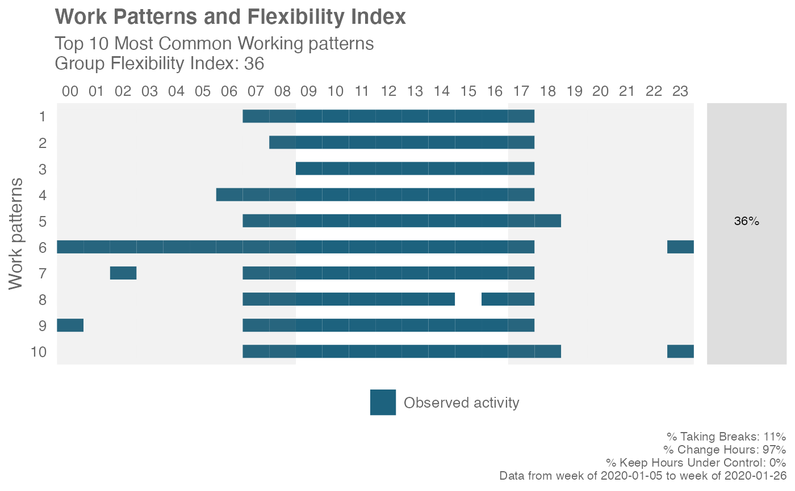

Compute a Flexibility Index based on the Hourly Collaboration Query
Source:R/flex_index.R
flex_index.Rd
Pass an Hourly Collaboration query and compute a Flexibility Index for the entire population. The Flexibility Index is a quantitative measure of the freedom for employees to work at a time of their choice.
flex_index( data, hrvar = NULL, signals = c("email", "IM"), active_threshold = 0, start_hour = "0900", end_hour = "1700", return = "plot", plot_method = "common" )
Arguments
| data | Hourly Collaboration query to be passed through as data frame. |
|---|---|
| hrvar | A string specifying the HR attribute to cut the data by. Defaults to NULL. This only affects the function when "table" is returned. |
| signals | Character vector to specify which collaboration metrics to
use: You may use "email" for emails only, "IM" for Teams messages only, or
a combination of the two |
| active_threshold | A numeric value specifying the minimum number of signals to be greater than in order to qualify as active. Defaults to 0. |
| start_hour | A character vector specifying starting hours, e.g. "0900" |
| end_hour | A character vector specifying end hours, e.g. "1700" |
| return | String specifying what to return. This must be one of the following strings:
See |
| plot_method | Character string for determining which plot to return.
|
Value
A different output is returned depending on the value passed to the return
argument:
"plot": ggplot object. A random of ten working patterns are displayed, with diagnostic data and the Flexibility Index shown on the plot."data": data frame. The original input data appended with the Flexibility Index and the component scores."table": data frame. A summary table for the metric. hen returning a plot,
Details
The Flexibility Index is a score between 0 and 1, and is calculated based on three component measures:
ChangeHours: this represents the freedom to define work start and end time. Teams that embrace flexibility allow members to start and end their workday at different times.TakeBreaks: this represents the freedom define one's own schedule. In teams that embrace flexibility, some members will choose to organize / split their day in different ways (e.g. take a long lunch-break, disconnect in the afternoon and reconnect in the evening, etc.).ControlHours: this represents the freedom to switch off. Members who choose alternative arrangements should be able to maintain a workload that is broadly equivalent to those that follow standard arrangements.
The Flexibility Index returns with one single score for each person-week,
plus the three sub-component binary variables (TakeBreaks,
ChangeHours, ControlHours). At the person-week level, each score can only
have the values 0, 0.33, 0.66, and 1. The Flexibility Index should only be
interpreted as a group of person-weeks, e.g. the average Flexibility
Index of a team of 6 over time, where the possible values would range from 0
to 1.
Context
The central feature of flexible working arrangements is that it is the employee rather the employer who chooses the working arrangement. Observed flexibility serves as a proxy to assess whether a flexible working arrangement are in place. The Flexibility Index is an attempt to create such a proxy for quantifying and measuring flexibility, using behavioural data from Workplace Analytics.
See also
Other Work Patterns:
personas_hclust(),
plot_flex_index(),
workpatterns_area(),
workpatterns_classify_bw(),
workpatterns_classify_pav(),
workpatterns_classify(),
workpatterns_hclust()
Examples
# Examples of how to test the plotting options individually # Sample of 10 work patterns em_data %>% flex_index(return = "plot", plot_method = "sample")# 10 most common work patterns em_data %>% flex_index(return = "plot", plot_method = "common")# Plot Flexibility Index over time em_data %>% flex_index(return = "plot", plot_method = "time")# Return a summary table with the computed Flexibility Index em_data %>% flex_index(hrvar = "Organization", return = "table")#> # A tibble: 4 x 5 #> Organization TakeBreaks ChangeHours ControlHours FlexibilityIndex #> * <chr> <dbl> <dbl> <dbl> <dbl> #> 1 Team 1 0.843 0.912 0.185 0.647 #> 2 Team 2 0.793 0.882 0.188 0.621 #> 3 Team 3 0.829 0.829 0.198 0.619 #> 4 Team 4 0.81 0.92 0.103 0.611if (FALSE) { # Return the raw data with the computed Flexibility Index em_data %>% flex_index(return = "data") }